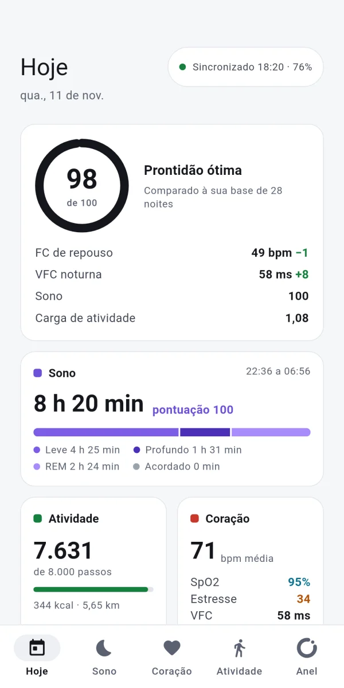
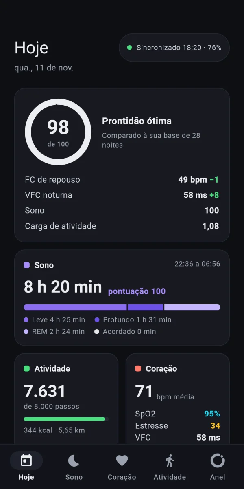

Sono com hipnograma
Leve, profundo, REM e acordado numa linha do tempo, e uma noite com despertar continua sendo uma noite só.
22:368 h 20 min dormidas06:56
Sono, coração, atividade e treinos com GPS do COLMI R09, guardados no seu celular. Vai para o Health Connect só se você quiser.
Ainda não há versão para iPhone.


Uma cor por família de métrica, igual em todas as telas: violeta é sono, coral é coração, verde é atividade, ciano é oxigênio, âmbar é estresse.
Leve, profundo, REM e acordado numa linha do tempo, e uma noite com despertar continua sendo uma noite só.
Frequência cardíaca ao longo do dia, VFC, SpO2 e estresse, lidos do anel e guardados no seu celular.
Uma nota de 0 a 100 que diz quanto cada entrada somou, comparada à sua própria base.
O celular marca o tempo, o anel manda a FC ao vivo e, ao ar livre, o GPS grava rota, ritmo e parciais, que você exporta em GPX.
Prontidão, resumo do dia, bateria do anel e um atalho para treinar, atualizados a cada sincronização.
Cada amostra pode ir para o Health Connect, inclusive o treino com a rota, para os apps que você escolher.
A prontidão soma quatro entradas com pesos fixos: sono vale até 35 pontos, VFC até 30, FC de repouso até 20 e carga de atividade até 15. VFC e FC de repouso são comparadas à sua própria base, não à média de outras pessoas.
A fórmula de cada pontuação, com pesos e faixas, é publicada junto com o código. Toque em qualquer nota no app e você vê as entradas daquele dia.
O OpenRing não precisa de nuvem para funcionar. Os dados saem do celular só quando você manda.
Tudo é guardado num banco local no seu celular, não num servidor nosso.
Sem cadastro, sem login, sem e-mail. Você pareia o anel e já usa.
O app não manda uso, cliques nem métricas. A internet serve só para buscar atualizações do próprio app.
CSV e JSON de tudo, GPX dos treinos, e Health Connect só com sua permissão.
O anel guarda o histórico; o celular conecta de tempos em tempos, puxa o que é novo e desconecta, o que poupa as duas baterias.
A conexão só fica aberta durante um treino ao vivo. A cada 60 min por padrão.
A primeira versão foi feita e verificada com um COLMI R09. Os outros modelos estão listados pelo que se sabe deles hoje.
| Modelo | Situação | O que isso quer dizer |
|---|---|---|
| COLMI R09 | Testado | O único anel na bancada. Toda verificação do protocolo é feita nele. |
| COLMI R02, R03, R06, R10 | Podem funcionar | Usam o mesmo protocolo, mas ainda não foram testados. |
Não. Não há cadastro, login nem e-mail. Você abre o app, pareia o anel e já começa a usar.
Ainda não. Por enquanto o OpenRing é para Android 9 ou mais novo.
Não. Eles ficam num banco local no seu celular. Só saem quando você permite: para o Health Connect, ou num arquivo CSV, JSON ou GPX que você exporta. Os detalhes estão na política de privacidade.
Não ao mesmo tempo. O anel conversa com um app por vez, então desconecte o anel do app original antes de parear no OpenRing.
Sim. O código é aberto, sob licença MIT, sem assinatura e sem anúncios.